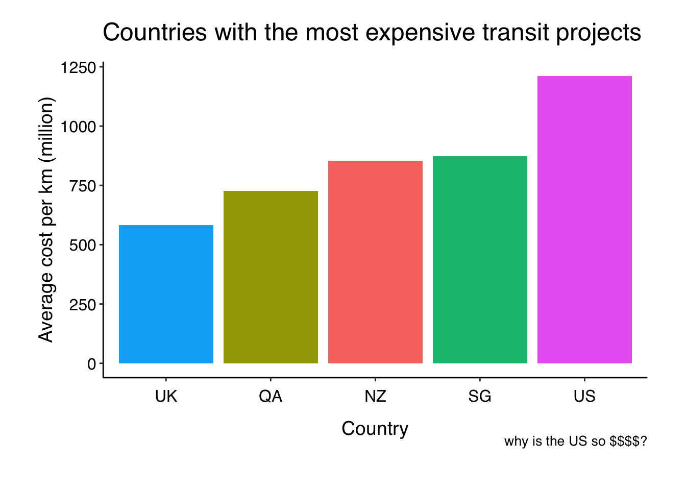
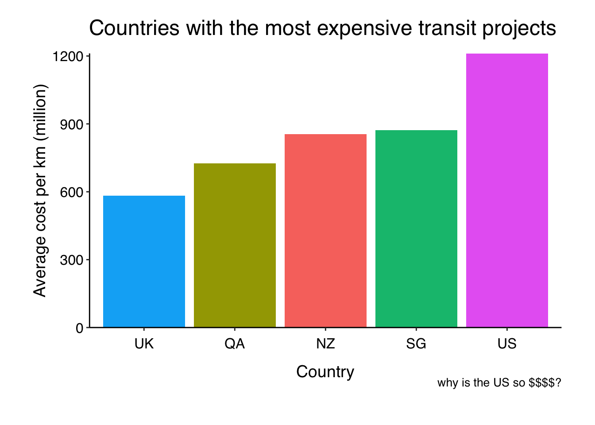

Last year my R resolution was to google less. I think I succeeded (kinda). I wrote a few posts in my IDHTG series.
I don’t necessary remember exactly how to recode variables or to make factors behave, but I know I have notes in my blog about those things to refer to, so that makes the googling much faster.
My time-saving resolution for 2021 is to write functions that save me time. There are things that I google every time because the code is almost impossible to remember. In the spirit of the ggeasy package (my new favourite) my plan is to start by writing wrapper functions for frequently used ggplot things.
I’m going to keep adding to this post throughout the year as I write functions to save me time.
When making plots I want a theme that is really similar to theme_classic() but I want the fonts to be bigger and for there to be more whitespace. I like theme_apa() a lot, but that requires that I have remembered to load library(papaja), which I don’t work with every day. So I want to make a theme_jen() that can live in my .RProfile file (access that with usethis::edit_r_profile) and be autoloaded every time I restart R.
This post from Maddie Pickins was really helpful in working out how to write a custom theme and this one helped me learn about margins and solve my white space problem.
Here is my custom theme…
theme_jen <- function () {
# define font up front
font <- "Helvetica"
# this theme uses theme_bw as the base
theme_bw() %+replace%
theme(
#get rid of grid lines/borders
panel.border = element_blank(),
panel.grid.major = element_blank(),
panel.grid.minor = element_blank(),
# add white space top, right, bottom, left
plot.margin = unit(c(1, 1, 1, 1), "cm"),
# custom axis title/text/lines
axis.title = element_text(
family = font,
size = 14),
axis.text = element_text(
family = font,
size = 12),
# margin pulls text away from axis
axis.text.x = element_text(
margin=margin(5, b = 10)),
# black lines
axis.line = element_line(colour = "black", size = rel(1)),
# custom plot titles, subtitles, captions
plot.title = element_text(
family = font,
size = 18,
hjust = -0.1,
vjust = 4),
plot.subtitle = element_text(
family = font,
size = 14,
hjust = 0,
vjust = 3),
plot.caption = element_text(
family = font,
size = 10,
hjust = 1,
vjust = 2),
# custom legend
legend.title = element_text(
family = font,
size = 10,
hjust = 0),
legend.text = element_text(
family = font,
size = 8,
hjust = 0),
#no background on legend
legend.key = element_blank(),
# white background on plot
strip.background = element_rect(fill = "white",
colour = "black", size = rel(2)), complete = TRUE)
}My new favourite package is ggeasy. It makes all the things you want to do in ggplot super EASY. For example, if you want to remove the legend, instead of …
+ theme(legend.title = element_blank())
you can use …
+ easy_remove_legend
One the things I google all the time is how to get the bars to sit on the x axis.
Here is some Tidy Tuesday data to illustrate
library(tidytuesdayR)
library(tidyverse)
library(ggeasy)
tt <- tt_load("2021-01-05")##
## Downloading file 1 of 1: `transit_cost.csv`cost <- tt$transit_costcost %>%
group_by(country) %>%
summarise(meancost = mean(cost_km_millions)) %>%
arrange(-meancost) %>%
head(5) %>%
ggplot(aes(x = reorder(country, meancost), y = meancost, fill = country)) +
geom_col() +
labs(y= "Average cost per km (million)", x = "Country",
title = "Countries with the most expensive transit projects",
caption = "why is the US so $$$$?") +
theme_jen() +
easy_remove_legend()
Here I have applied my custom theme and used ggeasy::easy_remove_legend(). Now I want the bars to sit on the x axis. I google this EVERYTIME scale_y_continuous(expand = c(0.0)), so lets wrap it in a function I might remember.
easy_expand_y_axis <- function ()
{
scale_y_continuous(expand = c(0, 0))
}Now I can use my function, just like the functions from ggeasy.
cost %>%
group_by(country) %>%
summarise(meancost = mean(cost_km_millions)) %>%
arrange(-meancost) %>%
head(5) %>%
ggplot(aes(x = reorder(country, meancost), y = meancost, fill = country)) +
geom_col() +
labs(y= "Average cost per km (million)", x = "Country",
title = "Countries with the most expensive transit projects",
caption = "why is the US so $$$$?") +
theme_jen() +
easy_remove_legend() +
easy_expand_y_axis()
ggsave(here::here("static", "img", "cost.png"))## Saving 7 x 5 in imageI am not sure where people generally keep these kinds of functions so that they are available to you whenever you want. Eventually, it probably makes sense to bundle them in a package, but for now I just put them in my .Rprofile file so that they load every time I start R. I guess that isn’t great if I want to share code with other people, but it will do for now.